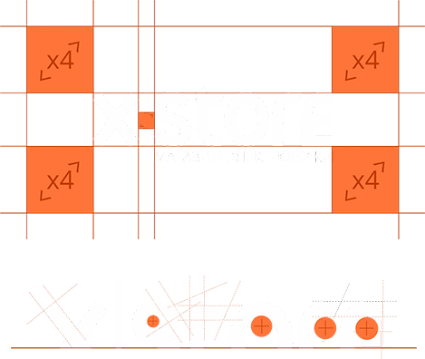

меню

§ Интро
Добро пожаловать в команду единомышленников X|Store!
Мы стремимся знать все о современной электронике, которая способна сделать жизнь каждого человека лучше, ярче и интереснее прямо сегодня. Нас приводят в восторг новейшие открытия отрасли, и о них мы рассказываем всеми доступными способами.
Образ и характер
бренда

Мы уважаем мнение каждого покупателя, своих коллег и своих партнеров. Диалог строится на равных, доступно и открыто. Не рекламная манипуляция, но идея, отражающая важные для реальных людей вещи – так ценность транслируется в наших коммуникациях.
Мы искренне рады людям, разделяющему нашу веру в то, что можно быть осознанным человеком в любой ситуации, сохраняя свою позицию. Мы признаем возможность быть собой, говорим о том, что важно для каждого. Наши покупатели не слепо следуют моде, а выбирают гаджет по душе. Осознанные покупки наших покупателей – это внешнее подтверждение выбранной позиции.

Аудитория

мужчины
женщины

от 35 лет
25-35 лет
до 25 лет
последователи
критики
новаторы
Аудитория бренда чрезвычайно разнообразна:
любой пользователь смартфона, планшета или другого гаджета - это наш потенциальный клиент.
Ниже приведены ключевые характеристики ЦА в процентном соотношении. При разработке рекламных акций или прочих маркетинговых активностей советуем полагаться на эти данные, всегда представлять портрет человека, для которого мы работаем.
любой пользователь смартфона, планшета или другого гаджета - это наш потенциальный клиент.
Ниже приведены ключевые характеристики ЦА в процентном соотношении. При разработке рекламных акций или прочих маркетинговых активностей советуем полагаться на эти данные, всегда представлять портрет человека, для которого мы работаем.
Охранные поля
Во всех материалах вокруг логотипа должна соблюдаться охранная зона. В охранную зону не должны попадать края макета, а также иные элементы: логотипы, текст, графика.



Мы допускаем использование логотипа без теглайна
Использование теглайна в логотипе определяется его целесообразностью. Приедем примеры. Когда масштаб логотипа слишком маленький, текст теглайна будет читаться некорректно и могут возникнуть проблемы с его печатью. В другой ситуации, воспроизведение теглайна может значительно увеличить бюджет (например при производстве лайтбокса). В таких и аналогичных ситуациях можно использовать вариант без него.
Супер знак и его история
Суперзнак - это дополняющий элемент основного логотипа. С его помощью рекламные материалы приобретают узнаваемый вид и единый визуально-коммуникативный образ. Суперзнак символизирует связующее звено в широкой географии сети X|Store, открытость и готовность к общению.
Цвет
Основные цвета компании. присутствуют практически во всех коммуникациях и различных материалах компании.
Дополнительные цвета компании используются для большей коммуникации. Применяются исключительно с основными цветами.
С-0, М-76,
Y-100, K-0
Pantone 1655C
solid coated
Y-100, K-0
Pantone 1655C
solid coated
С-75, М-2,
Y-23, K-0
Pantone 3115C
solid coated
Y-23, K-0
Pantone 3115C
solid coated
70% black
#727271
#727271
R-255, G-93, B-23
#ff5d17
#ff5d17
R-17, G-198, B-214
#11c6d6
#11c6d6
RGB-102
#666666
#666666
R-149, G-7, B-47
#95072f
#95072f
R-172, G-55, B-88
#AC3758
#AC3758
R-115, G-19, B-165
#7313A5
#7313A5
R-166, G-55, B-7
#A63707
#A63707
R-255, G-157, B-23
#FF9D17
#FF9D17
R-235, G-54, B-24
#EB3618
#EB3618

{kind=link}
{kind=link}
{kind=link}
Ко-брендинг
Размещение логотипов в партнерстве с другими брендами должно быть равным, а расстояние между ними соответствовать указанным интервальным отступам. Приоритет отдаётся варианту «X». В случае ограниченного места на носителе используется вариант «Y».
При создании собственных макетов, следуйте правилам «одной стороны» - логотипы размещаются строго по углам макета горизонтально или вертикально. Размещение логотипов по диагонали запрещено.
Типографика
Типографика неотъемлемая часть создания образа бренда X-store, решающая функциональную и эстетическую задачи
Функциональная задача типографики: сделать текст удобным для восприятия. Пользователь должен легко находить и читать необходимую информацию; текст должен выглядеть гармонично и аккуратно - не раздражать и не отвлекать. Задача эстетическая решается параллельно - грамотно оформленный текст уже сам по себе радует глаз. Шрифты X-store современны, буквенные символы передают характер и индивидуальность бренда - простой, но умный; строгий, но дружелюбный. Шрифты X-store включают основной и два дополнительных шрифта.
Акцидентный шрифт используется в заголовках, для выделения важной информации, Таковым является BEBAS bold. В объёмных текстовых блоках рекомендуется использовать основной шрифт Open Sans. Шрифт хорошо воспринимается даже в тексте с мелким кеглем. Для выделения дат и чисел, например в инфографике, - BEBAS Book.
Визуальные образы
Изображения в цветовой гамме бренда, воздействующие на эмоции; молодые прогрессивные люди; нативное использование гаджетов.
Не используемые визуальные образы - клип-арт изображения, наигранные эмоции, отсутствие фирменных цветов.